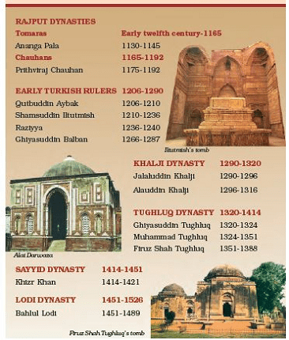
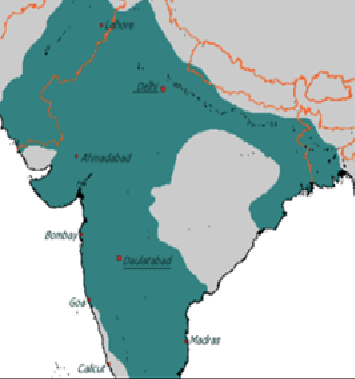

The Delhi Sultanate or the Sultanate of Delhi was a late medieval empire primarily based in Delhi that stretched over large parts of the Indian subcontinent, for 320 years.The empire consisted of 5 different dynasties that are:
The foundation of the Sultanate was established by the Ghurid conqueror Muhammad Ghori, who routed the Rajput Confederacy, led by Ajmer ruler Prithviraj Chauhan, in 1192 near Tarain in a reversal of an earlier battle. As a successor to the Ghurid dynasty, the Delhi Sultanate was originally one of several principalities ruled by the Turkic slave-generals of Muhammad Ghori.
Khalji and Tughlaq rule ushered a new wave of rapid and continual Muslim conquests deep into South India.The sultanate finally reached the peak of its geographical reach during the Tughlaq dynasty, occupying most of the Indian subcontinent under Muhammad bin Tughluq. A major political transformation occurred across North India,
At last,Ibrahim Lodhi the third a last ruler of the Lodhi Dynasty was defeated in the first battle of panipat by Babur establishing the Mughal Empire bringing an end to the Delhi Sultanate.
  Previous page